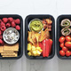

Simple No Cook Snacks
No time for meal prep? (Not even a no cook meal prep or one that you could make in 90 minutes or less? At least you can be prepared with a few nutritious no-cook snacks to get you through hectic days, and keep you from hitting the vending machine or fast food window.

Give Me Protein Snack Box
What’s in this snack: 2 hardboiled eggs. 4 oz. deli turkey, 1 oz cheese, 1 cup celery sticks with 1 Tbsp. peanut butter.
Fruits and Nuts Snack Box
What’s in this snack: ¾ cup plain 1% Greek yogurt mixed with 1 tsp. honey and ½ tsp. cinnamon, ½ cup strawberries, ½ cup nectarine or orange wedges, ½ cup green grapes, 12 raw almonds.
Easy Roast Beef Pinwheels
What’s in this snack: ¼ cup goat cheese, 4 oz. sliced roast beef, ½ cup spinach rolled up in 1 6-inch whole wheat tortilla and sliced into pinwheels, ½ cup cherry tomatoes, 1 kiwi (or plum, or small tangerine)
Chips and Dips Snack Box
What’s in this snack: ½ cup baked corn tortilla chips (or these homemade tortilla chips made from 2 corn tortillas), ¼ cup guacamole, ¼ cup pico de gallo, ¾ cup bell pepper sticks, ½ cup pineapple cubes.

No-Cook Snacks for the Sweet Tooth
What’s in this snack: 1 cup raspberries (or blueberries), 4 chocolate or plain Graham crackers (1 sheet), 1 Tbsp. cacao nibs mixed with 2 Tbsp. unsweetened coconut flakes.